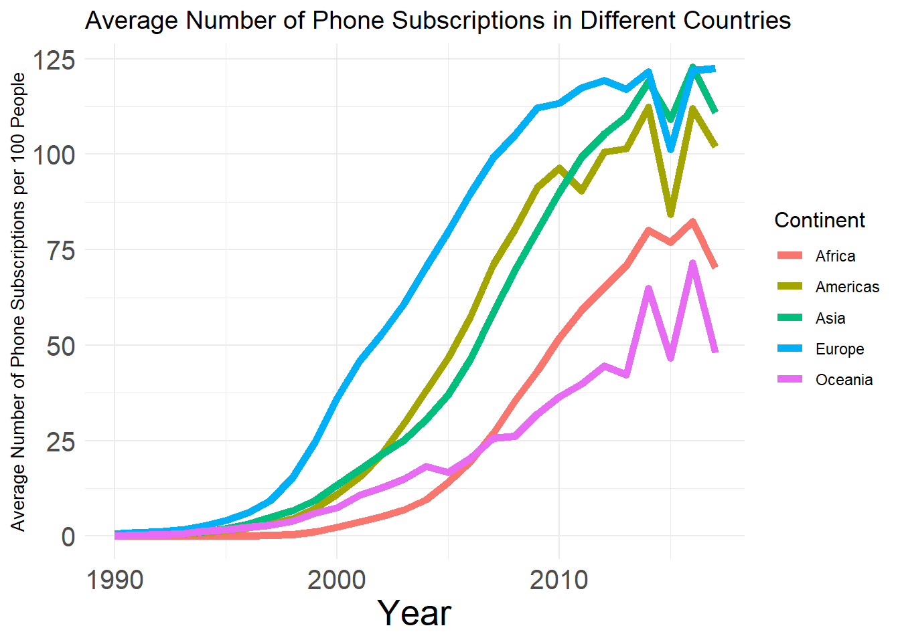

library(tidytuesdayR)
library(tidyverse)
tuesdata <- tidytuesdayR::tt_load(2020, week = 46)
raw_mobile <- tuesdata$mobileIntroduction
This blog focuses on a Historical Phone Usage for mobile and land-line phones. The data sets contain 6,267 and 6,964 observation respectively. This blog looks at the adoption of mobile phones in each country from 1990 until 2016. We are looking to examine how different continents adopted mobile technologies. Which continent adopted the quickest and which the slowest? Which continents had the most mobile subscriptions per 100 people in 2016? The data set comes from the tidytuesdayR Github repository (2020, week 46). The data can be found here: https://github.com/rfordatascience/tidytuesday/blob/master/data/2020/2020-11-10/readme.md.
Look at the Dataframe
head(raw_mobile)# A tibble: 6 × 7
entity code year total_pop gdp_per_cap mobile_subs continent
<chr> <chr> <dbl> <dbl> <dbl> <dbl> <chr>
1 Afghanistan AFG 1990 13032161 NA 0 Asia
2 Afghanistan AFG 1991 14069854 NA 0 Asia
3 Afghanistan AFG 1992 15472076 NA 0 Asia
4 Afghanistan AFG 1993 17053213 NA 0 Asia
5 Afghanistan AFG 1994 18553819 NA 0 Asia
6 Afghanistan AFG 1995 19789880 NA 0 Asia Visualization
library(ggplot2)
library(dplyr)
raw_mobile$mobile_subs[is.na(raw_mobile$mobile_subs)] <- 0
data_continent <- raw_mobile |>
group_by(continent, year) |>
summarise(mobile_subs = mean(mobile_subs))ggplot(data = data_continent, aes(x = year, y = mobile_subs, color = continent)) +
geom_line(linewidth = 2) +
theme_minimal() +
labs(title = "Average Number of Phone Subscriptions in Different Countries",
y = "Average Number of Phone Subscriptions per 100 People",
x = "Year",
color = "Continent") +
theme(axis.text.x = element_text(size = 15),
axis.text.y = element_text(size = 15),
axis.title.x = element_text(size = 20),
axis.title.y = element_text(size = 10),
title = element_text(size = 12))
The visual shows that Asia was the continent to most quickly adopt mobile technology and Africa was the slowest to adopt it. Africa began to really adopt it almost five years after the rest of the continents did. This doesn’t come as much of a surprise. What is more interesting is that Africa has more phones per person than the Oceania region does. I was not expecting this, but it makes sense since Oceania has many islands that probably don’t have a lot of technological innovation. It is clear that the Americas, Europe, and Asia have embraced the new tech with over 100 phones per 100 people on average for all those regions, whereas Africa and Oceania are lagging behind at only roughly 75 and 55 phones per 100 people respectively.
I this this approach is flawed in a few ways. First is that one cannot see the underlying data or the sample size that is summarized in the graph with only a mean. Additionally, the continent groupings are very broad. The Americas continent is quite large and includes a multitude of countries with different technological footprints. This goes for many of these continents. If I had more time, I’d examine a select a handful countries to compare from different regions, or compare different countries to each other within a region.
We have talked about coloring in homework and in class. In the visual, I used a categorical un-ordered color scale for the un-ordered categorical continents. We talked about different plots, and I think this line plot does a good job a representing this data. The plot was also kept simple and clean to avoid unnecessary clutter. For these reasons, I think this an effective visualization to answer the questions at hand.